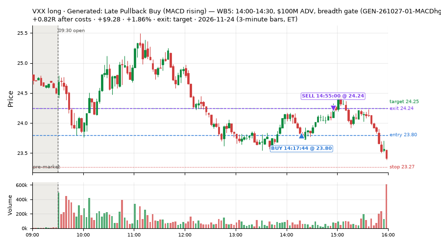
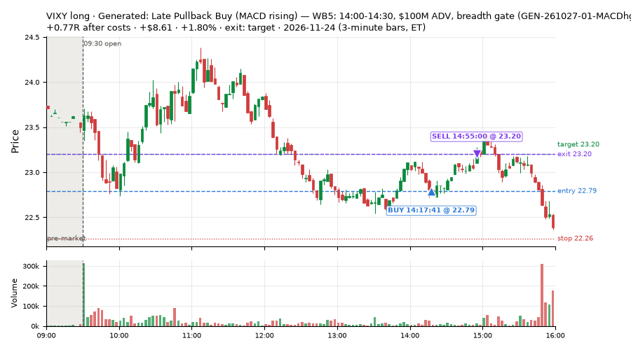
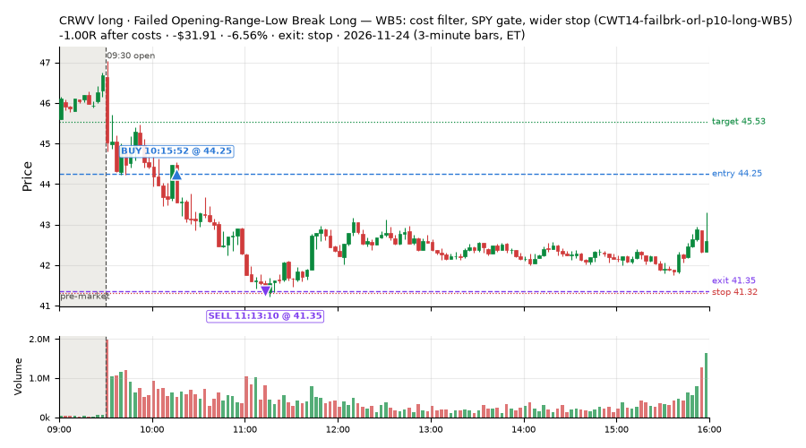
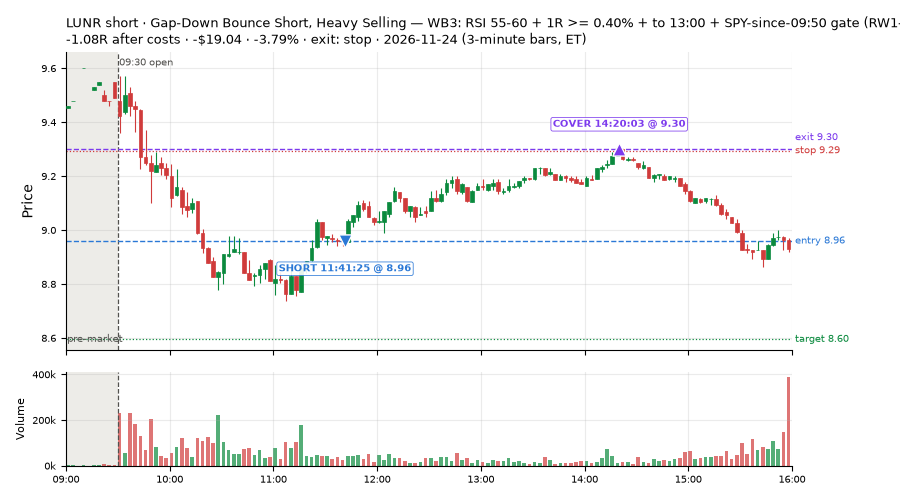
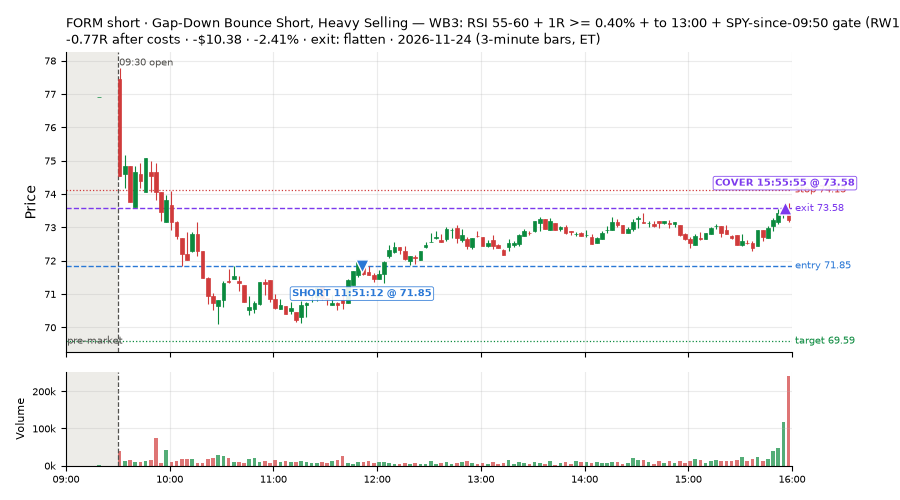
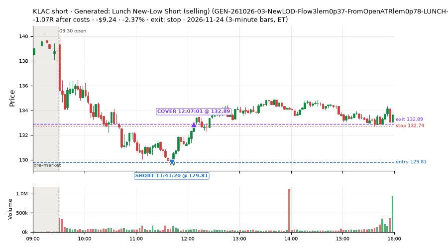
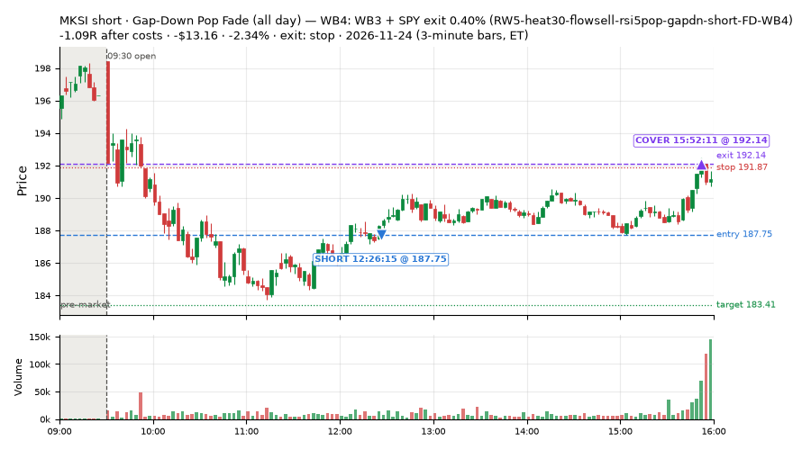

106 trades · win rate 37% · P/L $-169.92
PROBATION: no live setup has passed both locked test periods. 10 owner-directed setups added 2026-10-08 (MarcoFlow top 5 + 5 new), untested live. RW6G1 (RW6 + VWAP band guard) added 2026-10-09, probation.

| Symbol | Setup | Side | In | Out | Entry | Exit | Exit reason | % gained | P/L |
|---|---|---|---|---|---|---|---|---|---|
| UVXY | Generated: Late Pullback Buy (MACD rising) — WB5: 14:00-14:30, $100M ADV, breadth gate (GEN-261027-01-MACDhge0p12-Ret15mATRlem0p069-LATE-BRvwgt0p5-t05s1-long-WB5) | long | 14:17 | 14:55 | 25.04 | 25.75 | target | +2.84% | $13.50 |
| VXX | Generated: Late Pullback Buy (MACD rising) — WB5: 14:00-14:30, $100M ADV, breadth gate (GEN-261027-01-MACDhge0p12-Ret15mATRlem0p069-LATE-BRvwgt0p5-t05s1-long-WB5) | long | 14:17 | 14:55 | 23.80 | 24.24 | target | +1.86% | $9.28 |
| VIXY | Generated: Late Pullback Buy (MACD rising) — WB5: 14:00-14:30, $100M ADV, breadth gate (GEN-261027-01-MACDhge0p12-Ret15mATRlem0p069-LATE-BRvwgt0p5-t05s1-long-WB5) | long | 14:17 | 14:55 | 22.79 | 23.20 | target | +1.80% | $8.61 |
| Symbol | Setup | Side | In | Out | Entry | Exit | Exit reason | % lost | P/L |
|---|---|---|---|---|---|---|---|---|---|
| CRWV | CWT14-failbrk-orl-p10-long-WB5 | long | 10:15 | 11:13 | 44.25 | 41.35 | stop | -6.56% | $-31.91 |
| LUNR | RW1-gapdn-bounce-flowsell-short-FD-WB3 | short | 11:41 | 14:20 | 8.96 | 9.30 | stop | -3.79% | $-19.04 |
| FORM | RW1-gapdn-bounce-flowsell-short-FD-WB3 | short | 11:51 | 15:55 | 71.85 | 73.58 | flatten | -2.41% | $-10.38 |
| KLAC | GEN-261026-03-NewLOD-Flow3lem0p37-FromOpenATRlem0p78-LUNCH-BRopgt0p5-holdtr-short | short | 11:41 | 12:07 | 129.81 | 132.89 | stop | -2.37% | $-9.24 |
| MKSI | RW5-heat30-flowsell-rsi5pop-gapdn-short-FD-WB4 | short | 12:26 | 15:52 | 187.75 | 192.14 | stop | -2.34% | $-13.16 |







Signal to fill: median 2s, 90th percentile 3s (106 trades). Bars close each minute; the order follows the bar close.
Best excursion (MFE): median 0.39R; worst (MAE) median 0.54R. 36% of trades never got +0.25R in our favour; 1 reached +1R and still closed at or below 0.
| Symbol | Setup | Best R | Worst R | Closed R |
|---|---|---|---|---|
| SWKS | GEN-261027-10-FlowShiftlem1p2-MACDhge0p079-SMA20dge0p59-LUNCH-BRopgt0p65-holdtr-long | +0.71 | -1.08 | -1.12 |
| BX | RW1-gapdn-bounce-flowsell-short-FD-WB3 | +0.66 | -1.02 | -1.16 |
| BAM | RW1-gapdn-bounce-flowsell-short-FD-WB3 | +0.52 | -1.02 | -1.07 |
| LTH | GEN-261027-10-FlowShiftlem1p2-MACDhge0p079-SMA20dge0p59-LUNCH-BRopgt0p65-holdtr-long | +0.42 | -1.08 | -1.17 |
| CRM | NS4-pm-vwap-reclaim-oversold-short | +1.08 | -0.61 | -0.48 |
| Entry time | Trades | Win | Avg R | P/L |
|---|---|---|---|---|
| 09:50-10:30 | 2 | 0% | -0.61 | $-32.95 |
| 10:30-11:30 | 6 | 17% | -0.65 | $-15.51 |
| 11:30-13:00 | 56 | 36% | -0.27 | $-128.05 |
| 13:00-14:00 | 20 | 25% | -0.29 | $-40.78 |
| 14:00-16:00 | 22 | 59% | +0.12 | $47.37 |
| Setup | Trades | Win | Avg R after costs | Adj R (net of SPY) | Avg R ex-market (all sessions) | P/L |
|---|---|---|---|---|---|---|
| Panic Flush Reversal (deep, 5x volume) (CWT05-flush-m075-v5-long) | 2.0 | 50% | -0.40 | -0.41 | – | $-2.78 |
| Failed Opening-Range-Low Break Long — WB5: cost filter, SPY gate, wider stop (CWT14-failbrk-orl-p10-long-WB5) | 1.0 | 0% | -1.00 | -0.87 | +0.05 (beta +0.39, n 100) | $-31.91 |
| Late-Day ETF Dip Buy, High-Dispersion Days (ETFDISP-late-dip-hidisp-long) | 4.0 | 75% | +0.21 | +0.27 | -0.03 (beta -1.61, n 6) | $3.46 |
| Generated: Lunch New-Low Short (selling) (GEN-261026-03-NewLOD-Flow3lem0p37-FromOpenATRlem0p78-LUNCH-BRopgt0p5-holdtr-short) | 2.0 | 0% | -1.06 | -0.82 | +0.41 (beta -2.69, n 6) | $-20.44 |
| Generated: Late Pullback Buy (MACD rising) — WB5: 14:00-14:30, $100M ADV, breadth gate (GEN-261027-01-MACDhge0p12-Ret15mATRlem0p069-LATE-BRvwgt0p5-t05s1-long-WB5) | 4.0 | 75% | +0.43 | +0.53 | – | $22.08 |
| Generated: PM Gap-Up New-Low Buy (SPY up) (GEN-261027-02-NewLOD-RSI14le35-Gapge2-PM-SPYup-holdtr-long) | 1.0 | 100% | +0.27 | +0.32 | – | $1.56 |
| Generated: Lunch Selling-Flush Buy (extended) (GEN-261027-10-FlowShiftlem1p2-MACDhge0p079-SMA20dge0p59-LUNCH-BRopgt0p65-holdtr-long) | 47.0 | 23% | -0.32 | -0.26 | -0.14 (beta +1.56, n 47) | $-102.70 |
| Generated: Late Quiet-Day Short (QQQ down) (GEN-261029-06-EMAdChgge0p092-DayRngVsPrevle0p61-LATE-QQQltm0p3-t1s1-short) | 10.0 | 50% | +0.11 | +0.17 | +0.11 (beta -0.30, n 210) | $24.55 |
| Afternoon VWAP Reclaim Fade (NS4-pm-vwap-reclaim-oversold-short) owner-directed; holdouts once: Sep-Oct -0.086R n49, Apr-Jun -0.080R n342 | 3.0 | 33% | -0.33 | -0.01 | -0.37 (beta -1.67, n 19) | $-0.76 |
| Gap-Down Bounce Short, Heavy Selling — WB3: RSI 55-60 + 1R >= 0.40% + to 13:00 + SPY-since-09:50 gate (RW1-gapdn-bounce-flowsell-short-FD-WB3) | 25.0 | 44% | -0.25 | -0.11 | -0.18 (beta -0.99, n 67) | $-51.63 |
| Gap-Down Pop Fade (all day) — WB4: WB3 + SPY exit 0.40% (RW5-heat30-flowsell-rsi5pop-gapdn-short-FD-WB4) | 7.0 | 43% | -0.18 | -0.30 | -0.05 (beta -0.39, n 26) | $-11.35 |
Market direction (SPY, beta 1) accounted for $-84.12 of today's $-169.92; the rest ($-85.80) came from the setups themselves. Avg R net of SPY: -0.15 (incl. a hedge leg's cost; report only).
22 setups live today. Today: 201 signals, 106 taken, 1 lost because another setup held the symbol (0%). Since 2026-11-12 (9 sessions): 1793 signals, 843 taken, 9 lost to other setups (0%). Peak open positions today 88 of 400 slots. Earnings blackout removed 124 symbols before scanning.
Simulated playing time (not live): 948 what-if trades of signals not taken, avg +0.04R, 61% winners; of them 9 lost to another setup (avg -0.03R).
Silent: NM-RWN4-ns2-spyup05-notfri-short, GEN-261029-09-RangeExpge1p6-Since950ATRlem0p43-OPEN-BRvwgt0p5-hold-short, GEN-261019-07-VolRatioge2-UpWickge0p59-DayRngVsPrevge1p5-LATE-SPYgt0p5-t05s1-long, GEN-261028-05-EMAdChgge0p093-ORLdistlem0p42-LAM-QQQgt0p6-holdtr-long, LD4-st4-breadthup-t1s05-long, GEN-261027-03-NewLOD-DayPosle0p19-SMA20dlem0p59-LAM-SPYgt0p5-hold-long, ULT-HV2-shock-snap-etf-long-K, CWT04-backside-vwaptest-a25-short, GEN-261022-07-Z12lem1p9-FlowShiftlem0p96-ATRdge3p6-AM-BRopgt0p5-t1s1-short
| Prio | Setup | Today sig / taken | Sessions | Signals / taken / trades | Taken/day | Expected/day | Lost to other setups | Lost to (setup n) | Top skip reasons | SIMULATED: not-taken n / avg R / win | Verdict |
|---|---|---|---|---|---|---|---|---|---|---|---|
| 1 | Gap-Down Pop Fade (all day) — WB4: WB3 + SPY exit 0.40% RW5-heat30-flowsell-rsi5pop-gapdn-short-FD-WB4 | 13 / 7 | 6 | 43 / 26 / 26 | 4.33 | – | 0 | – | spread / quote / size 16, not shortable / shorts off 1 | 17 / -0.13R / 47% | ok 21.7 entries/week |
| 2 | Gap-Down Bounce Short, Heavy Selling — WB3: RSI 55-60 + 1R >= 0.40% + to 13:00 + SPY-since-09:50 gate RW1-gapdn-bounce-flowsell-short-FD-WB3 | 38 / 25 | 6 | 108 / 67 / 67 | 11.17 | – | 0 | – | spread / quote / size 25, other 13, not shortable / shorts off 3 | 41 / -0.16R / 42% | ok 55.8 entries/week |
| 3 | Generated: Late Pullback Buy (MACD rising) — WB5: 14:00-14:30, $100M ADV, breadth gate GEN-261027-01-MACDhge0p12-Ret15mATRlem0p069-LATE-BRvwgt0p5-t05s1-long-WB5 | 6 / 4 | 6 | 6 / 4 / 4 | 0.67 | – | 0 | – | spread / quote / size 1, other 1 | 2 / +0.42R / 100% | slow 3.3 entries/week; ~18 weeks to 60 trades |
| 4 | NS2 Short, SPY Up 0.5%, Not Friday (near-miss) NM-RWN4-ns2-spyup05-notfri-short | 0 / 0 | 3 | 0 / 0 / 0 | 0.00 | – | 0 | – | – | 0 / – | silent no signals in 3 session(s); no expected rate on file |
| 5 | Generated: Open Range-Expansion Short GEN-261029-09-RangeExpge1p6-Since950ATRlem0p43-OPEN-BRvwgt0p5-hold-short | 0 / 0 | 3 | 0 / 0 / 0 | 0.00 | – | 0 | – | – | 0 / – | silent no signals in 3 session(s); no expected rate on file |
| 6 | Monday Weak-RS NS3 Short (near-miss) NM-RWN5-ns3-mon-weakrs-short | 0 / 0 | 9 | 76 / 45 / 45 | 5.00 | – | 1 | IDX2-spy075-0945-3x-trail 1 | spread / quote / size 21, not shortable / shorts off 5, other 4 | 31 / -0.19R / 39% | ok 25.0 entries/week |
| 7 | Generated: Late Volume Spike Buy (wide day) GEN-261019-07-VolRatioge2-UpWickge0p59-DayRngVsPrevge1p5-LATE-SPYgt0p5-t05s1-long | 0 / 0 | 3 | 0 / 0 / 0 | 0.00 | – | 0 | – | – | 0 / – | silent no signals in 3 session(s); no expected rate on file |
| 8 | Generated: Lunch Selling-Flush Buy (extended) GEN-261027-10-FlowShiftlem1p2-MACDhge0p079-SMA20dge0p59-LUNCH-BRopgt0p65-holdtr-long | 71 / 47 | 3 | 71 / 47 / 47 | 15.67 | – | 1 | RW5-heat30-flowsell-rsi5pop-gapdn-short-FD-WB4 1 | spread / quote / size 20, other 3, symbol held by another setup 1 | 24 / +0.12R / 50% | ok 78.3 entries/week |
| 9 | Generated: Late-AM Below-Range Turn Buy GEN-261028-05-EMAdChgge0p093-ORLdistlem0p42-LAM-QQQgt0p6-holdtr-long | 0 / 0 | 3 | 0 / 0 / 0 | 0.00 | – | 0 | – | – | 0 / – | silent no signals in 3 session(s); no expected rate on file |
| 10 | Index Dip Bounce 2 3x S&P IDX2-spy075-0945-3x-trail | 0 / 0 | 9 | 1 / 1 / 1 | 0.11 | – | 0 | – | – | 0 / – | slow 0.6 entries/week; ~108 weeks to 60 trades |
| 11 | * Oversold EMA Cross-Down with Breadth Turning Up (near-miss) LD4-st4-breadthup-t1s05-long | 0 / 0 | 9 | 0 / 0 / 0 | 0.00 | – | 0 | – | – | 0 / – | silent no signals in 9 session(s); no expected rate on file |
| 12 | Generated: PM Runner Fade (SPY down) GEN-261019-09-EMAdChgge0p15-Since950ATRge0p6-PM-SPYltm0p5-t05s1-short | 0 / 0 | 7 | 53 / 8 / 8 | 1.14 | – | 0 | – | not shortable / shorts off 39, other 4, spread / quote / size 1 | 44 / +0.01R / 66% | slow 5.7 entries/week; ~11 weeks to 60 trades |
| 13 | Generated: Late Volume-Spike Low Buy GEN-261026-02-VolRatioge2-SMA20dlem0p58-BarsSinceLODle1-LATE-BRoplt0p35-t1s1-long | 0 / 0 | 7 | 98 / 64 / 64 | 9.14 | – | 1 | GEN-261029-06-EMAdChgge0p092-DayRngVsPrevle0p61-LATE-QQQltm0p3-t1s1-short 1 | other 17, spread / quote / size 15, symbol held by another setup 1 | 34 / -0.48R / 24% | ok 45.7 entries/week |
| 14 | Panic Flush Reversal (deep, 5x volume) CWT05-flush-m075-v5-long | 3 / 2 | 9 | 6 / 4 / 4 | 0.44 | – | 0 | – | spread / quote / size 1, broker rejected 1 | 2 / +0.41R / 100% | slow 2.2 entries/week; ~27 weeks to 60 trades |
| 15 | Generated: PM Gap-Up New-Low Buy (SPY up) GEN-261027-02-NewLOD-RSI14le35-Gapge2-PM-SPYup-holdtr-long | 1 / 1 | 7 | 1 / 1 / 1 | 0.14 | – | 0 | – | – | 0 / – | slow 0.7 entries/week; ~84 weeks to 60 trades |
| 16 | Generated: Late-AM New-Low Buy (SPY up) GEN-261027-03-NewLOD-DayPosle0p19-SMA20dlem0p59-LAM-SPYgt0p5-hold-long | 0 / 0 | 7 | 0 / 0 / 0 | 0.00 | – | 0 | – | – | 0 / – | silent no signals in 7 session(s); no expected rate on file |
| 17 | Generated: Lunch New-Low Short (selling) GEN-261026-03-NewLOD-Flow3lem0p37-FromOpenATRlem0p78-LUNCH-BRopgt0p5-holdtr-short | 4 / 2 | 9 | 8 / 6 / 6 | 0.67 | – | 0 | – | not shortable / shorts off 1, other 1 | 2 / +0.48R / 50% | slow 3.3 entries/week; ~18 weeks to 60 trades |
| 18 | Generated: Late Quiet-Day Short (QQQ down) GEN-261029-06-EMAdChgge0p092-DayRngVsPrevle0p61-LATE-QQQltm0p3-t1s1-short | 42 / 10 | 7 | 654 / 210 / 210 | 30.00 | – | 4 | CWT14-failbrk-orl-p10-long-WB5 2, CWT14-failbrk-pdl-p10-lowvol-long 1, GEN-261026-02-VolRatioge2-SMA20dlem0p58-BarsSinceLODle1-LATE-BRoplt0p35-t1s1-long 1 | other 139, not shortable / shorts off 120, per-setup cap 100 | 444 / +0.18R / 68% | ok 150.0 entries/week |
| 19 | Afternoon VWAP Reclaim Fade NS4-pm-vwap-reclaim-oversold-short | 14 / 3 | 9 | 56 / 19 / 19 | 2.11 | 3.05 | 0 | – | other 20, spread / quote / size 14, not shortable / shorts off 3 | 37 / +0.24R / 60% | slow 10.6 entries/week; ~6 weeks to 60 trades |
| 20 | Failed Opening-Range-Low Break Long — WB5: cost filter, SPY gate, wider stop CWT14-failbrk-orl-p10-long-WB5 | 4 / 1 | 6 | 138 / 100 / 100 | 16.67 | – | 1 | NM-RWN5-ns3-mon-weakrs-short 1 | spread / quote / size 36, symbol held by another setup 1, broker rejected 1 | 38 / +0.01R / 68% | ok 83.3 entries/week |
| 21 | Late-Day ETF Dip Buy, High-Dispersion Days ETFDISP-late-dip-hidisp-long | 5 / 4 | 3 | 7 / 6 / 6 | 2.00 | – | 0 | – | spread / quote / size 1 | 1 / -0.20R / 0% | slow 10.0 entries/week; ~6 weeks to 60 trades |
| 22 | ETF One-Bar Shock Snap-Back ULT-HV2-shock-snap-etf-long-K | 0 / 0 | 3 | 0 / 0 / 0 | 0.00 | – | 0 | – | – | 0 / – | silent no signals in 3 session(s); no expected rate on file |
Every trade is attached as a CSV you can open and edit in Excel or Google Sheets. Live page: https://misiti15.github.io/MCF/live/